Manuel d'utilisation du joystick connecté


Vous aurez besoin
-
Du joystick connecté qui est composé :
- d'un boîtier électronique avec un écran et des boutons de contrôle
- et d'un mini joystick.
- De l'application mobile BaahBox (voir la section de téléchargement )
Fonctionnement
Le boîtier électronique utilise le Bluetooth pour communiquer à un smartphone (ou une tablette), les
mouvements du mini joystick.
Ce joystick permettent de contrôler les personnages des jeux.
Le boitier est alimenté par une batterie interne, que l'on peut recharger via la prise USB-C sur le coté
de la coque.
Pour que la recharge de la batterie fonctionne, il faut que le joystick soit allumé.
Utilisation
-
Fixez le joystick sur l'accoudoir d'un fauteuil (avec par exemple du scotch d'électricien). et...
installez vous dans le fauteuil !

-
Allumez le joystick avec l'interrupteur situé au dessus de l'écran

- Si la batterie à plat, branchez le à un cable USB-C.
La mise en route peut prendre 1-2 secondes. L'écran peut afficher quelques points blancs avant de présenter la page d'accueil.
Navigation dans les menus
L'écran du joystick est équipé de plusieurs boutons pour naviguer dans les menus :
- Bouton A : Sélection/validation
- Bouton B : Affichage des courbes des capteurs
- Bouton C : Retour/annulation et affichage des informations du boîtier
- Bouton Reset : Redémarre la BaahBox
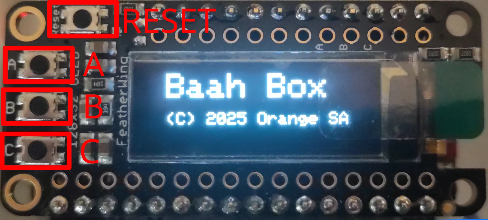
Vérification du bon fonctionnement du joystick
-
Appuyez sur le bouton -B- pour afficher les courbes des données envoyées par le
joystick:
La courbe de gauche montrer les mouvements avant-arrière du joystick, la courbe de droite montre les mouvements droite-gauche.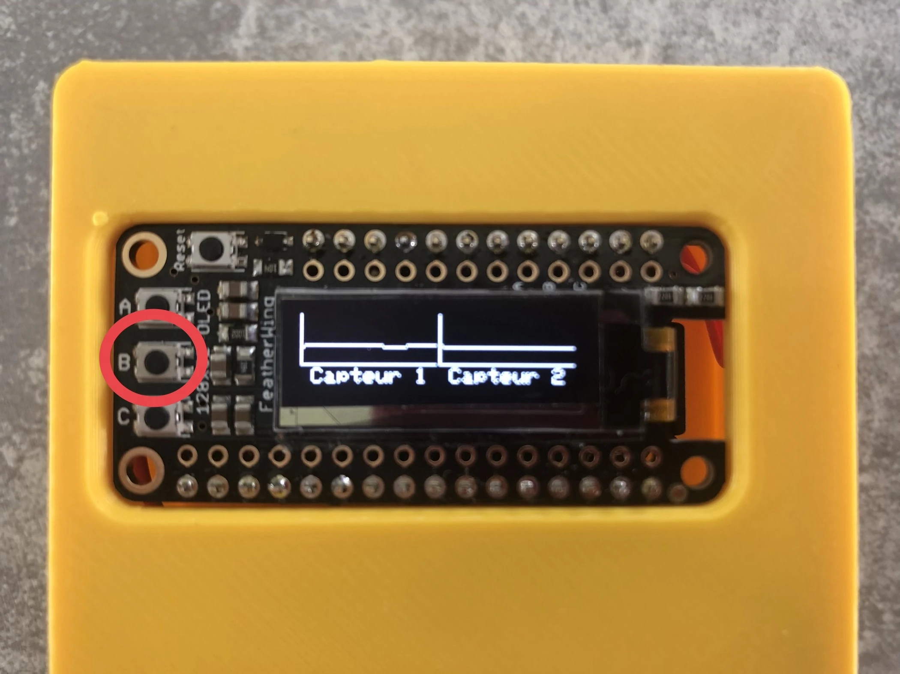
Configuration
Connexion à l'application mobile
- Téléchargez l'application mobile BaahBox sur votre appareil (voir section Télécharger l'application)
- Activez le Bluetooth sur votre téléphone (ou tablette) et lancez l'application
-
Appuyez sur l'icône des paramètres en haut à droite de l'écran d'accueil
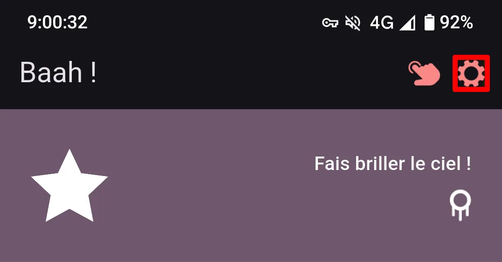
-
Allez dans Connexion
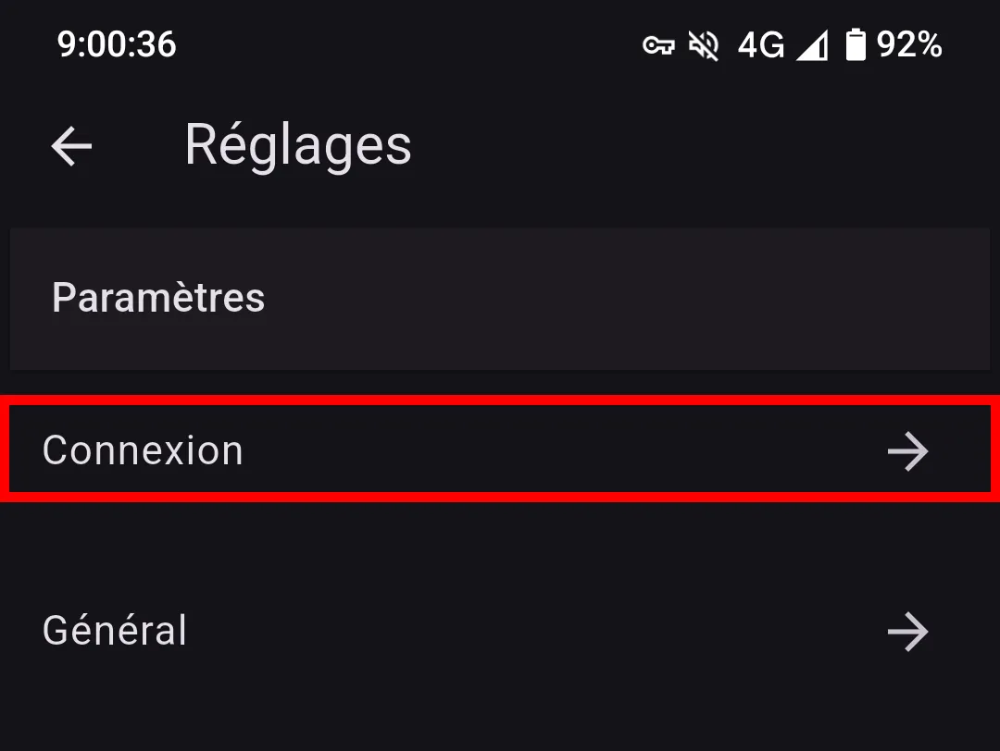
-
Appuyez sur "Démarrer" pour démarrer la recherche de votre joystick connecté (appelé Baahxx)
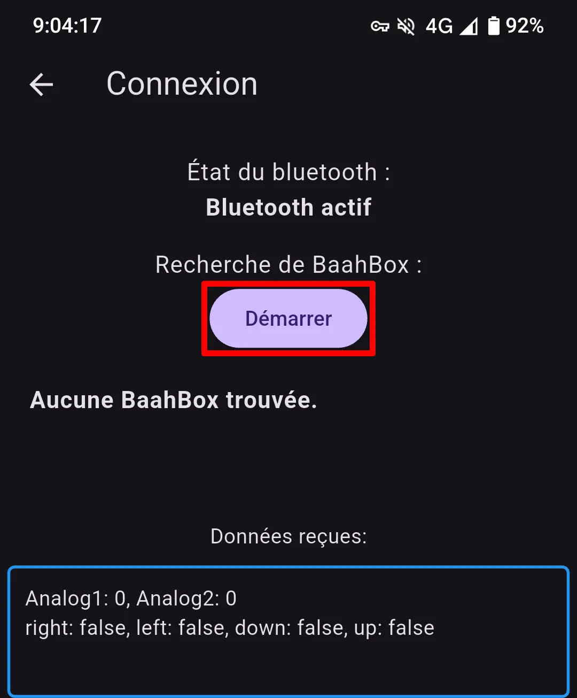
-
Puis sélectionnez votre BaahBox/joystick dans la liste.
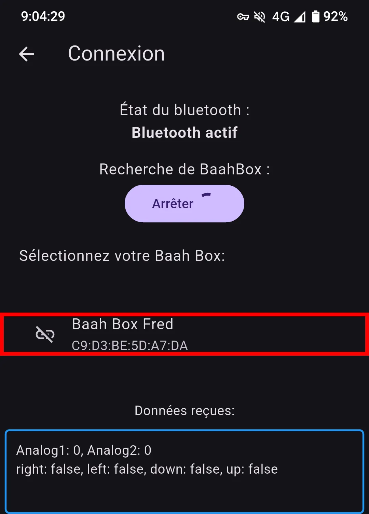
-
Lorsque la connexion sera établie, le mot "connectée" apparaîtra à coté, et l'encart "Données reçues"
indiquera des valeurs supérieures à 0 pour les capteurs 1 et 2.
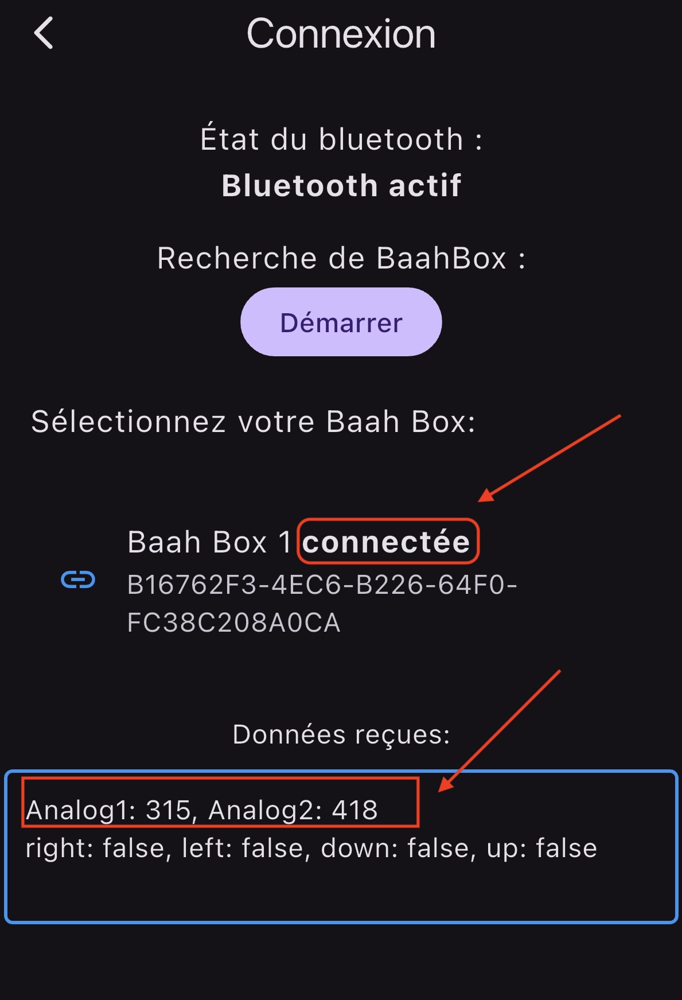
Configuration du capteur
Pour que l'application prenne correctement en compte le comportement du mini joystick :
- Allez dans les paramètres de l'application
-
Sélectionnez "General"
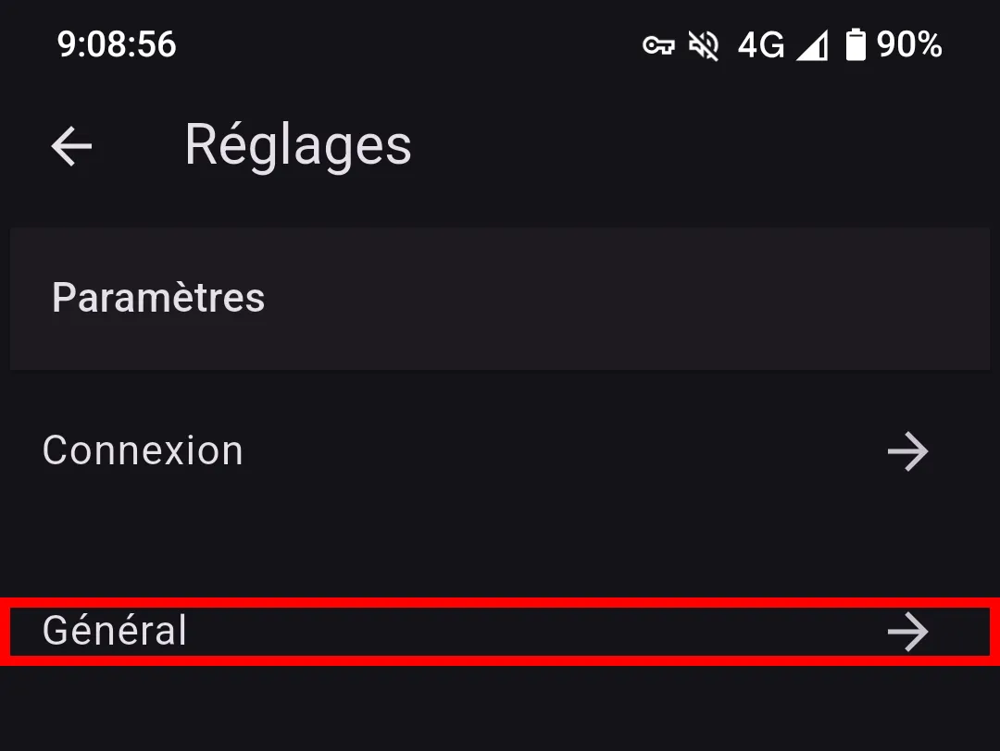
-
Choisissez le type de capteur dans la liste ("joystick analogique")
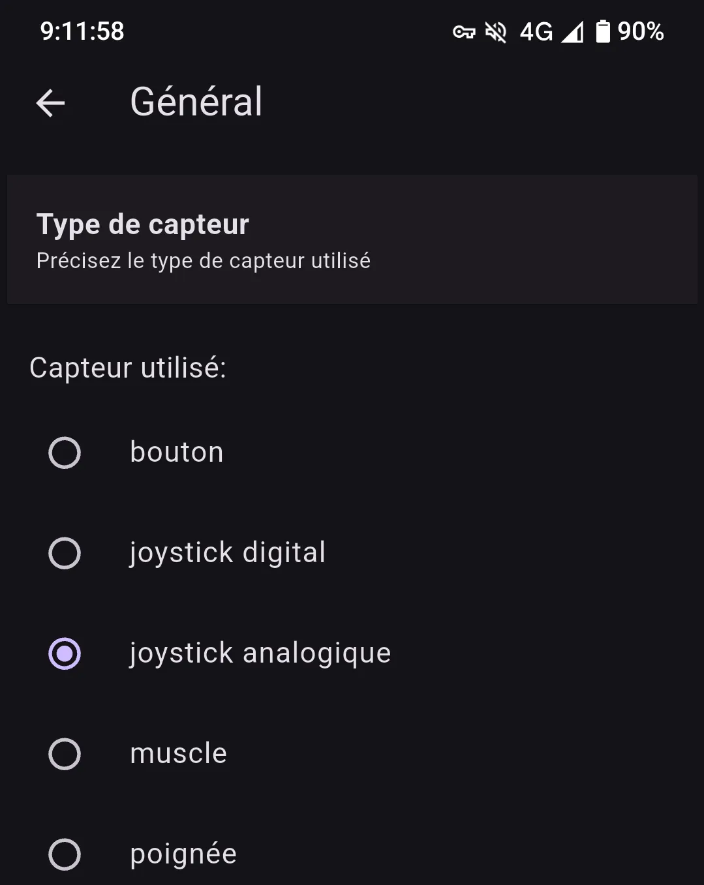
Choisir un jeu
Pour commencer à jouer :
-
Cliquez sur le bandeau correspondant au jeu de votre choix.
Les jeux de labyrinthes en bas du menu sont les plus appropriés pour ce joystick, mais on peut quand même jouer aux autres jeux avec.
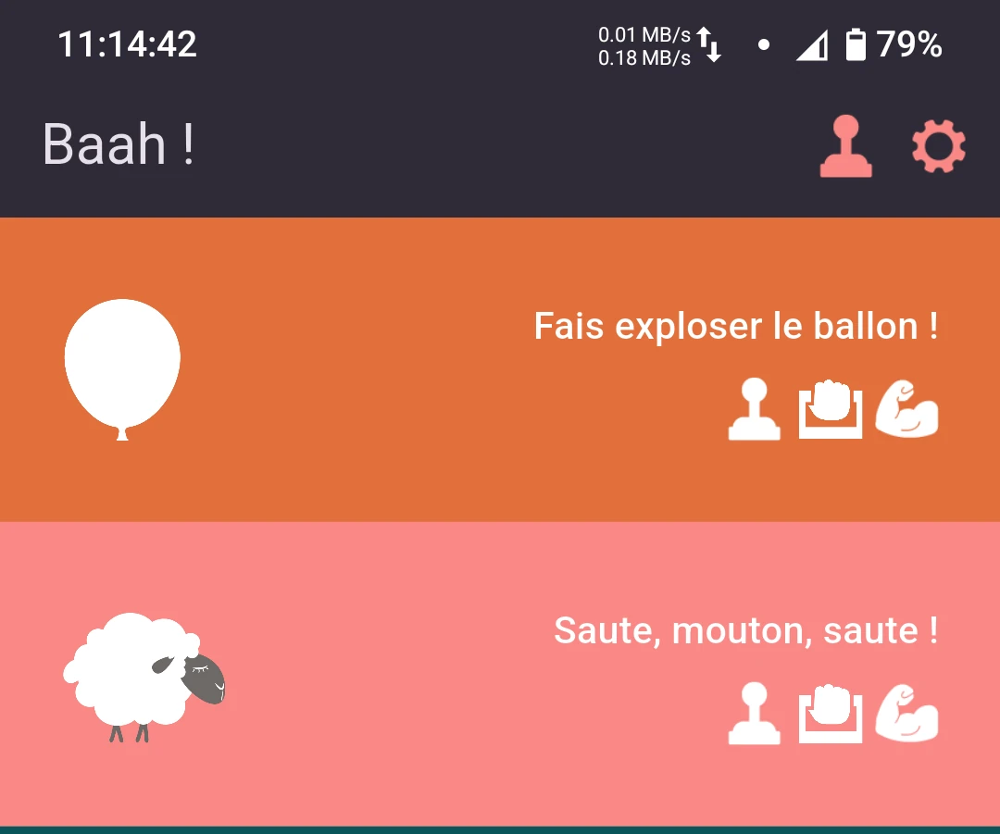
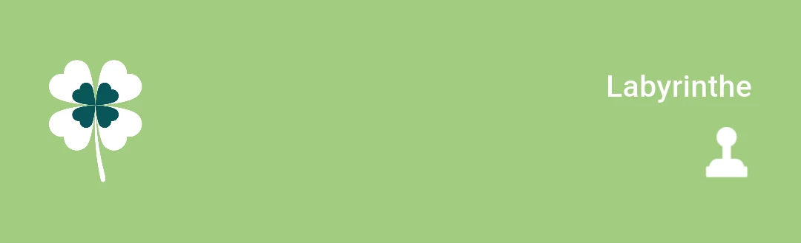
-
Un court texte vous explique comment jouer
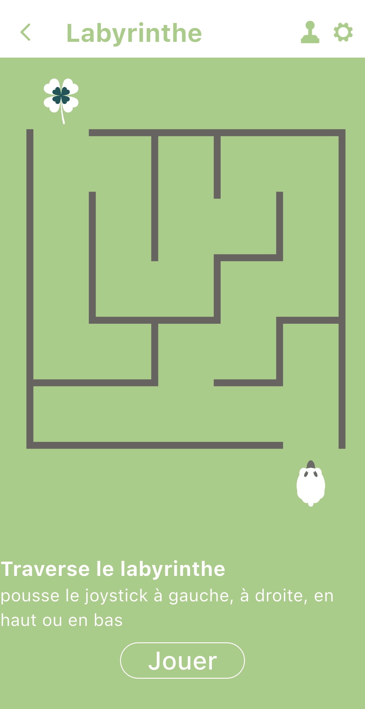
- Cliquez sur "Jouer" pour démarrer la partie
Astuce : Pour économiser la batterie de votre smartphone, pensez à couper le bluetooth après utilisation.
Télécharger l'application
L'application BaahBox est disponible sur les deux plateformes :
Scanner pour télécharger
Utilisez l'appareil photo de votre téléphone pour scanner le code correspondant à votre appareil :
Android

iOS

Ressources techniques
- Les sources Arduino sont dans le répertoire project du repo : BaahBox-Arduino
- Les sources de l'application iOS : BaahBox-iOS
- Les sources de l'application Android : BaahBox-Flutter-android
- Les ressources graphiques : BaahBox-assets